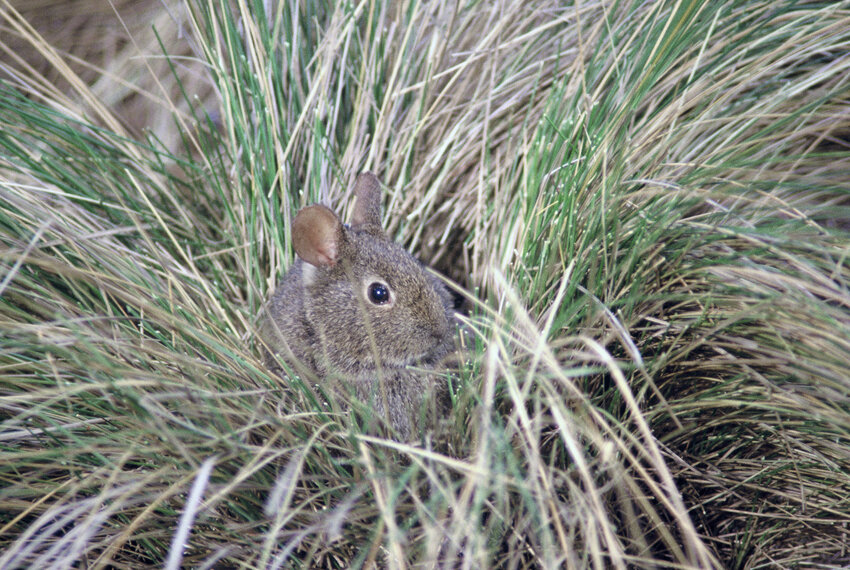

V areálu žije v husté trávě, které se tamní řečí říká zacaton („vysoká tráva“) – odtud domorodý název králíka „zacatochin“. Na zacatonu je závislý. Porosty zacatonu tvoří kostřavy, kavyl a další druhy trav. Pro králíka je vysoká tráva mj. úkrytem, protože se před predátory spíše schovává, než aby utíkal. Ve srovnání s králíkem divokým (Oryctolagus cuniculus) žijícím v ČR není tak rychlý. (Je však zdatný skokan, schopný pohybovat se po strmých svazích s překvapivou obratností.)
Má soumračnou aktivitu, nejaktivnější je brzy ráno při východu slunce a k večeru. K pohybu v zacatonu využívá cestičky vyšlapané jinými živočichy. Pokud se nekrmí, je ukrytý v podzemní noře, kde žije ve skupině tří až čtyř jedinců (jiné zdroje uvádějí velikost skupiny do pěti jedinců). Nora mezi trsy trávy zacatonu je mělká a hnízdo pro mláďata vystlané vegetací a chlupy.
Rostlinná strava zahrnuje listy, květy, některé plody (semena, jádra), kůru dřevin, zejména však rostliny tvořící porost zacatonu – rostliny rodů kostřava (Festuca tolucensis, Festuca amplissima), kavyl (kavyl andský, Stipa ichuv) a Muhlenbergia macroura (syn. Epicampes macroura), všechny z čeledi lipnicovité. Dále konzumuje mátu, pcháč, kontryhel a z čeledi miříkovité máčku (Eryngium rosei) a arakaču (Arracacia arguta, syn. Museniopsis arguta).
